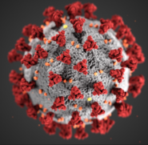

Des articles interessants à ce sujet :
Santé et IA : quelle révolution nous attend ?
Les progrès permettent de comprendre le fonctionnement du corps humain, pour mieux l'imiter, le soigner, l'accompagner.
Voir les images issues d'un cerveau

Utiliser les signaux cérébraux pour reconstruire les images
Une volonté politique
Renforcer le systeme de santé digitale en soutenant les start up Françaises vers l'international
L'IA a l'aide des Nanoparticules
Des nanoparticules enrobés de polymères grâce à l'IA pour soigner les maladies graves telles que Parkinson ou Alzeimer